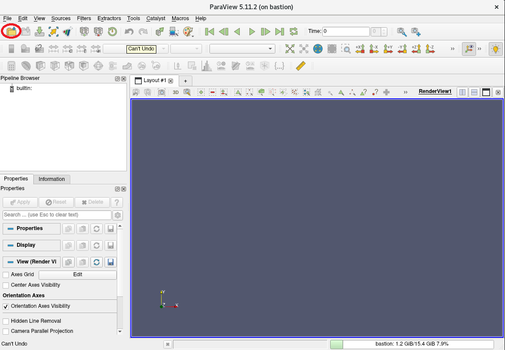
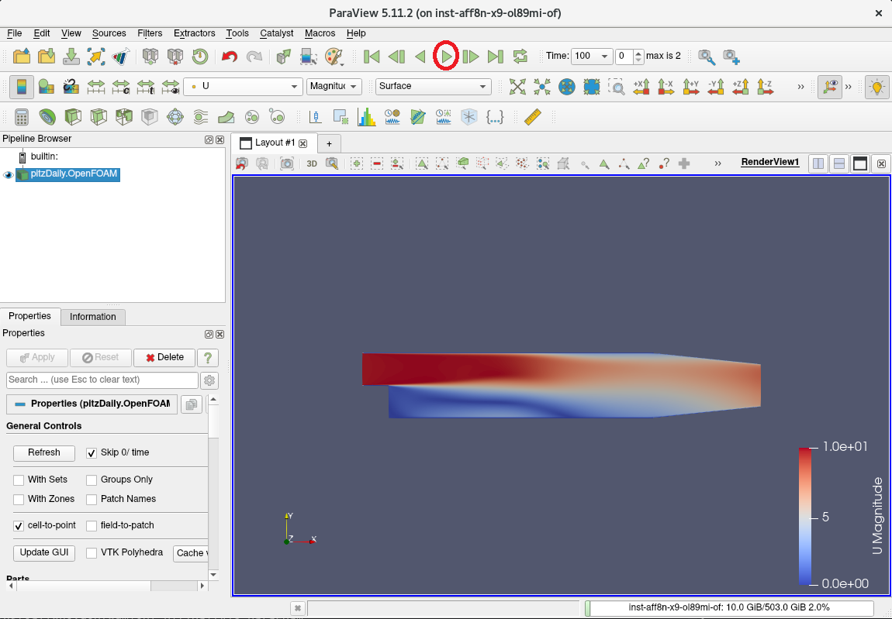

0. 概要
OpenFOAM は、プリ処理・解析処理・ポスト処理の全てのCFD解析フローを様々なオープンソースのツール類と連携し、自身の解析用途に合わせた最適な流体解析シミュレーションを実施することが可能です。
この際、外部のツールと連携して OpenFOAM を利用するためには、ビルド時にこれを意識した構築手順を踏む必要があります。
本テクニカルTipsは、以下の外部ツールと連係動作する OpenFOAM を構築します。
- OpenMPI
MPI言語規格に準拠するMPI実装 - PETSc
偏微分方程式で記述された問題をMPIで並列計算するための数値計算ライブラリ - FFTW
高速フーリエ変換ライブラリ - ParaView
計算結果の可視化ツール - VTK
ParaView がモデルの描画を行う際に使用する可視化ツールキット - ParaView Catalyst
ParaView でin-situシミュレーションを行うためのツールキット - MESA
ParaView でOff-screenレンダリングを行うためのグラフィックライブラリ - METIS
メッシュを並列計算用に領域分割するツール - SCOTCH
メッシュを並列計算用に領域分割するツール - KaHIP
メッシュを並列計算用に領域分割するツール - CGAL
幾何形状を取り扱うライブラリー - ADIOS
大規模データを効率よく可視化・解析するためのフレームワーク
また本テクニカルTipsは、 OpenFOAM に同梱されるチュートリアルを使用し、構築した環境でプリ処理・解析処理・ポスト処理のCFD解析フローを実行します。
構築する環境は、以下を前提とします。
- CFD解析ノードシェイプ ： BM.Optimized3.36
- CFD解析ノードOS ： Oracle Linux 8.9 または Oracle Linux 8.9ベースのHPC クラスタネットワーキングイメージ （※1）
- OpenFOAM ： v2312
- OpenMPI ：5.0.3
- ParaView ： 5.11.2
※1）OCI HPCテクニカルTips集 の クラスタネットワーキングイメージの選び方 の 1. クラスタネットワーキングイメージ一覧 のイメージ No.1 です。
なお、 ParaView がX11ベースのアプリケーションのため、この操作画面を表示するXサーバの稼働する ParaView 操作端末を用意します。
以降では、以下の順に OpenFOAM のインストール・利用方法を解説します。
- CFD解析ノードデプロイ
- インストール事前準備
- ParaView インストール
- OpenFOAM インストール
- OpenFOAM 実行
1. CFD解析ノードデプロイ
本章は、 OpenFOAM を実行するCFD解析ノードを以下の仕様でデプロイします。
- シェイプ ： BM.Optimized3.36
- ブート・ボリューム サイズ ： 100GB以上（インストールするソフトウェアの容量確保のため）
- SMT : 無効（※2）
※2）SMTを無効化する方法は、 OCI HPCパフォーマンス関連情報 の パフォーマンスに関連するベアメタルインスタンスのBIOS設定方法 を参照してください。
2. インストール事前準備
本章は、 OpenFOAM と外部ツールをインストールするための事前準備として、以下の作業を実施します。
- 前提条件のRPMパッケージ・ソフトウェアのをインストール
- OpenFOAM と外部ツールのソースプログラムのダウンロード・展開
以降の手順は、CFD解析ノードで実行します。
-
OpenMPI をインストール・セットアップします。
この方法は、 OCI HPCテクニカルTips集 の Slurm環境での利用を前提とするOpenMPI構築方法 を参照してください。 -
以下コマンドをopcユーザで実行し、前提条件のRPMパッケージを提供するyumレポジトリを追加します。
$ sudo yum-config-manager --enable ol8_codeready_builder ol8_developer_EPELなお、上記コマンド実行時に以下のメッセージが出力される場合、
This system is receiving updates from OSMS server. Error: No matching repo to modify: ol8_developer_EPEL.OSのパッケージ管理が OS管理サービス で行われているため、以下コマンドをopcユーザで実行し、これを解除した後に再度yumレポジトリを追加します。
ここで実施する OS管理サービス の解除は、10分程度の時間が経過すると自動的に OS管理サービス 管理に戻ります。$ sudo osms unregister $ sudo yum-config-manager --enable ol8_codeready_builder ol8_developer_EPEL -
以下コマンドをopcユーザで実行し、前提条件のRPMパッケージをインストールします。
$ sudo dnf install -y cmake mesa-libGL mesa-libGL-devel mesa-dri-drivers git xauth xcb-proto xcb-util-devel xcb-util-wm xcb-util-wm-devel xcb-util-cursor xcb-util-cursor-devel libXrender-devel xcb-util-keysyms xcb-util-keysyms-devel libxkbcommon-devel libxkbcommon-x11 libxkbcommon-x11-devel fontconfig-devel freetype-devel libXext-devel libSM-devel libICE-devel boost boost-devel fftw gmp-c++ gmp-devel mpfr-devel blas blas-devel lapack lapack-devel jasper-devel python3.11-devel -
以下コマンドをrootユーザで実行し、 OpenFOAM と外部ツールをダウンロード・展開します。
$ mkdir /opt/OpenFOAM && cd /opt/OpenFOAM $ wget https://dl.openfoam.com/source/v2312/OpenFOAM-v2312.tgz $ wget https://dl.openfoam.com/source/v2312/ThirdParty-v2312.tgz $ tar --no-same-owner -xvf ./OpenFOAM-v2312.tgz $ tar --no-same-owner -xvf ./ThirdParty-v2312.tgz $ cd ThirdParty-v2312/sources $ wget http://glaros.dtc.umn.edu/gkhome/fetch/sw/metis/metis-5.1.0.tar.gz $ wget https://ftp.mcs.anl.gov/pub/petsc/release-snapshots/petsc-lite-3.19.2.tar.gz $ wget https://download.qt.io/archive/qt/5.12/5.12.11/single/qt-everywhere-src-5.12.11.tar.xz $ tar --no-same-owner -xvf ./metis-5.1.0.tar.gz $ tar --no-same-owner -xvf ./petsc-lite-3.19.2.tar.gz $ tar --no-same-owner -xvf ./qt-everywhere-src-5.12.11.tar.xz $ mv qt-everywhere-src-5.12.11 qt-everywhere-opensource-src-5.12.11 -
以下コマンドをrootユーザで実行し、 PETSc をインストールします。
この際、以下コマンド出力で正しくインストールされたことを確認します。$ export PATH=$PATH:/opt/openmpi-5.0.3/bin $ source /opt/OpenFOAM/OpenFOAM-v2312/etc/bashrc No completions for /home/opc/OpenFOAM-v2312/platforms/linux64GccDPInt32Opt/bin [ignore if OpenFOAM is not yet compiled] $ cd .. $ ./makePETSC : : : Installed: petsc-3.19.2 <--- この出力 $
3. ParaViewインストール
本章は、 ParaView をCFD解析ノードにインストールします。
-
以下コマンドをrootユーザで実行し、 ParaView の前提ソフトウェアである Qt をインストールします。
この際、以下コマンド出力で正しくインストールされたことを確認します。
本手順は、15分程度を要します。$ ./makeQt 5.12.11 : : : Built: qt-5.12.11 <--- この出力 Create/Edit files to ease later relocation of a QT installation created qt.conf Adjust pkgconfig locations : /opt/OpenFOAM/ThirdParty-v2312/platforms/linux64Gcc/qt-5.12.11 lib/pkgconfig/*.pc (edited 62) $ -
以下コマンドをrootユーザで実行し、 ParaView をインストールします。
この際、以下コマンド出力で正しくインストールされたことを確認します。
本手順は、15分程度を要します。$ ./makeParaView -qt-5.12.11 -mpi -python3 : : : Installation complete for paraview-5.11.2 with qt-5.12.11 <--- この出力 ParaView_DIR=/opt/OpenFOAM/ThirdParty-v2312/platforms/linux64Gcc/ParaView-5.11.2 You may need to update the OpenFOAM environment by running: wmRefresh Your LD_LIBRARY_PATH may require adjustment to include the following: /opt/OpenFOAM/ThirdParty-v2312/platforms/linux64Gcc/qt-5.12.11/lib ==== Done $
4. OpenFOAMインストール
本章は、 OpenFOAM をCFD解析ノードにインストールします。
-
以下コマンドをrootユーザで実行し、 OpenFOAM のインストール条件を満たしていることを確認します。
$ foamSystemCheck Checking basic system... ------------------------------------------------------------------------------- Shell: bash Host: openfoam OS: Linux version 5.15.0-205.149.5.1.el8uek.x86_64 System check: PASS ================== Can continue to OpenFOAM installation. $ -
以下コマンドをrootユーザで実行し、 OpenFOAM をインストールします。
この際、最後に実行するコマンドの出力を注意深く確認し、 0. 概要 にリストアップされている外部ツールが OpenFOAM に組み込まれたことを確認します。なおこのコマンド出力は、カレントディレクトリにファイル名 log.linux64GccDPInt32Opt としても出力されます。
本手順は、30分程度を要します。$ export ParaView_DIR=$WM_THIRD_PARTY_DIR/platforms/linux64Gcc/ParaView-5.11.2 $ export Qt5_DIR=$WM_THIRD_PARTY_DIR/platforms/linux64Gcc/qt-5.12.11 $ cd /opt/OpenFOAM/OpenFOAM-v2312 $ ./Allwmake -j -s -q -l : : : $ -
以下コマンドをrootユーザで実行し、 OpenFOAM のインストールをテストします。
$ foamInstallationTest : : : Summary ------------------------------------------------------------------------------- Base configuration ok. Critical systems ok. Done $
5. OpenFOAM実行
本章は、 OpenFOAM に同梱されるチュートリアルのうちL字管内流れのシミュレーション（incompressible/icoFoam/elbow）を使用し、CFD解析ノードでプリ処理・解析処理・ポスト処理のCFD解析フローを実行します。
なお本章の作業は、実際にCFD解析フローを実行するユーザで実施しますが、ここではopcを使用します。
-
Xサーバの稼働する ParaView 操作端末から、Xフォワードを有効にしてCFD解析ノードにSSHでログインします。
-
以下コマンドを実行し、 OpenFOAM に同梱されているチュートリアルをコピーします。
これにより、チュートリアルに含まれるファイルが ~/OpenFOAM/user_name-v2312/run/tutorials にコピーされます。$ source /opt/OpenFOAM/OpenFOAM-v2312/etc/bashrc $ mkdir -p $FOAM_RUN && cp -r $FOAM_TUTORIALS $FOAM_RUN -
以下コマンドを実行し、L字管内流れの解析フローのうち、プリ処理と解析処理を実行します。
$ cd OpenFOAM/opc-v2312/run/tutorials/incompressible/icoFoam/elbow/ $ foamRunTutorials Restore 0/ from 0.orig/ Running fluentMeshToFoam on /home/opc/OpenFOAM/opc-v2312/run/tutorials/incompressible/icoFoam/elbow Running icoFoam on /home/opc/OpenFOAM/opc-v2312/run/tutorials/incompressible/icoFoam/elbow Running foamMeshToFluent on /home/opc/OpenFOAM/opc-v2312/run/tutorials/incompressible/icoFoam/elbow Running foamDataToFluent on /home/opc/OpenFOAM/opc-v2312/run/tutorials/incompressible/icoFoam/elbow $ -
以下コマンドを実行し、解析結果を読み込んで ParaView を起動します。
$ paraFoam Created temporary 'elbow.OpenFOAM' -
以下 ParaView 画面で、 Apply ボタンをクリックします。

-
以下 ParaView 画面で、メニュから速度を選択します。

-
以下 ParaView 画面で、シミュレーション結果を再生します。

-
以下 ParaView 画面で、シミュレーション時間が1から10まで進むことを確認します。